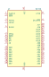
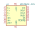
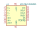
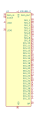
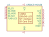

| Symbol |
Description |

82720 | Description: Graphics Display Controller, PDIP-40
Keys: Graphics Controller
Datasheet: None |
ADS7843E | Description: Single-supply, 12bit, 4 ch, touch screen driver, 2.2 - 5.25 VDD, -40 to +85 C, QSPI, SPI, 3-wire serial interface, SSOP-16
Keys: Single-supply, 12bit, 4 ch, touch screen driver, 2.2 - 5.25 VDD, -40 to +85 C, QSPI, SPI, 3-wire serial interface, SSOP-16
Datasheet: http://www.ti.com/lit/ds/symlink/ads7843.pdf |

ADS7843E-2K5 | Description: Single-supply, 12bit, 4 ch, touch screen driver, 2.2 - 5.25 VDD, -40 to +85 C, QSPI, SPI, 3-wire serial interface, SSOP-16
Keys: Single-supply, 12bit, 4 ch, touch screen driver, 2.2 - 5.25 VDD, -40 to +85 C, QSPI, SPI, 3-wire serial interface, SSOP-16
Datasheet: http://www.ti.com/lit/ds/symlink/ads7843.pdf |
ADS7843EG4 | Description: Single-supply, 12bit, 4 ch, touch screen driver, 2.2 - 5.25 VDD, -40 to +85 C, QSPI, SPI, 3-wire serial interface, SSOP-16
Keys: Single-supply, 12bit, 4 ch, touch screen driver, 2.2 - 5.25 VDD, -40 to +85 C, QSPI, SPI, 3-wire serial interface, SSOP-16
Datasheet: http://www.ti.com/lit/ds/symlink/ads7843.pdf |

ADS7843IDBQRQ1 | Description: Single-supply, 12bit, 4 ch, touch screen driver, 2.2 - 5.25 VDD, -40 to +125 C, QSPI, SPI, 3-wire serial interface, SSOP-16
Keys: Single-supply, 12bit, 4 ch, touch screen driver, 2.2 - 5.25 VDD, -40 to +125 C, QSPI, SPI, 3-wire serial interface, SSOP-16
Datasheet: http://www.ti.com/lit/ds/symlink/ads7843-q1.pdf |
AY0438X-L | Description: 32-Segment CMOS LCD Driver, CMOS and TTL-compatible inputs, VDD +3.0V to +8.5V, PLCC-44
Keys: driver display
Datasheet: http://www.farnell.com/datasheets/43336.pdf |

AY0438X-P | Description: 32-Segment CMOS LCD Driver, CMOS and TTL-compatible inputs, VDD +3.0V to +8.5V, DIP-40
Keys: driver display
Datasheet: http://www.farnell.com/datasheets/43336.pdf |

CR2013-MI2120 | Description: ILI9341 controller, SPI TFT LCD Display, 9-pin breakout PCB, 4-pin SD card interface, 5V/3.3V
Keys: driver display
Datasheet: http://pan.baidu.com/s/11Y990 |
XPT2046QF | Description: Single-supply, 12bit, 4 ch, touch screen driver, 2.2 - 5.25 VDD, -40 to +85 C, QSPI, SPI, 3-wire serial interface, QFN-16
Keys: Single-supply, 12bit, 4 ch, touch screen driver, 2.2 - 5.25 VDD, -40 to +85 C, QSPI, SPI, 3-wire serial interface, QFN-16
Datasheet: http://www.xptek.cn/uploadfile/download/201707171401161883.pdf |
XPT2046TS | Description: Single-supply, 12bit, 4 ch, touch screen driver, 2.2 - 5.25 VDD, -40 to +85 C, QSPI, SPI, 3-wire serial interface, TSSOP-16
Keys: Single-supply, 12bit, 4 ch, touch screen driver, 2.2 - 5.25 VDD, -40 to +85 C, QSPI, SPI, 3-wire serial interface, TSSOP-16
Datasheet: http://www.xptek.cn/uploadfile/download/201707171401161883.pdf |